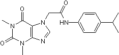

A question I have: how, exactly, does teargas work?
I'm not expecting a correct answer, in fact until late November of last year I myself thought they just acted via nonspecific irritation or something along those lines.
It turns out that's wrong. Teargas, or 2-chlorobenzylidene malononitrile, it turs out, works via a much more specific mechanism. Specifically, it is an agonist of the transient potential cation channel, ankyrin-1 (TRPA1). It is in fact not only *selective* for this receptor, but it is the strongest activator of it known, at 7.3 nanomolar -- stronger than what is used in research for activating it (namely, cinnamaldehyde). More information here, here, and here, as well as in their references (if you encounter a paywall, prepend http://sci-hub.tw to the URL).
This, in fact, upon reflection, makes a lot more sense: you can pick up quite a bit of resistance to teargas from repeated exposure, as any frontliner would know. If the action of CS was more nonspecific, this wouldn't be the case.
If that seems too implausible so far, keep in mind that it is well-known that capsaicin, the active ingredient in spicy food as well as pepperspray (also very beloved by the HKPF) works via a somewhat related cation channel, TRPV1 (aka the vanilloid transient potential channel). And you can build up quite a bit of resistance to pepperspray via intentionally exposing yourself to high concentrations of capsaicin. I can attest personally to that. Eating multiple habaneros a day and rubbing oil from then in your eyes periodically sucks a lot, but it pays off when you get peppersprayed and are nevertheless able to still immediately book it over the Central elevated walkway system and thus just barely evade getting arrested. Anyway.
A natural question to ask oneself, given all this, is: if we have a receptor agonist, have we found a receptor *antagonist* that would correspondingly prevent activation of the receptor in the face of agonist? If this were the case, taking the antagonist beforehand, should, in theory, abolish the action of the agonist completely.

This is HC-030031, or theophylline-7-(N-(4-Isopropylphenyl)acetamide). If you're thinking it looks a bit familiar, yes, this is literally just caffeine with N-(4-Isopropylphenyl)acetamide stapled to it. It's a selective antagonist of TRPA1, and in rodents blocks the effects of teargas completely.
And in humans. I believe I am the first person in the world to have tried this; tho it's entirely possible that other people have as well and just likewise kept it secret until the right time for this.
How well does it work? Well, after trying a dose escalation from single-digit milligrams for allergy testing and then double-digit milligrams to see if there are dose-limiting negative side-effects, I then took 350mg at once for a safety test. By sheer coincidence I happened to be walking by Langham Place a half-hour later. It was late so I wasn't expecting anything... but as we all know, the free square on HKPF bingo is "teargas on Nathan Road & Argyle Street". I was wearing only a surgical mask and my regular glasses, nothing else. There was a lot of teargas and it was truly surreal, I was basically completely unaffected by it. My eyes stung a little but that's it, even when I walked *right by* a canister billowing it out. I didn't really want to attract too much attention for obvious reasons so I quickly left, since the sight of someone just casually going for a stroll in teargas clouds was bound to attract attention (and prolly arrest).
So it did seem to work. I tried a few more times just for safety on repeated doses, and got to test it again unfortunately on Christmas eve when once again, Asia's finest goon squad decided to play with their favourite toys again. I was completely unaffected, and I drew a few stares even from the people I was helping direct out of the crowd (I was wearing just a regular mask and light-up reindeer horns... not exactly your usual 3M respirator and hard hat frontliner wear that I'd normally have in such a situation... part of me was hoping after the past few protests actually progressed okay for a change that maybe the government decided to cool it a bit after the PolyU siege (look I can be way too much of an optimist sometimes)).
I also tried a dose of multiple grams just to see how safe it was, after having written some of this down. It made mustard taste like vinegar for the entire next week, but still didn't have any negative effects. Oh yeah, mustard, horseradish and wasabi also act via the same receptor, they're just several orders of magnitude less potent at activating it.
I was intending to go do a large order direct from a chemical supplier and talk to frontliners in early January -- I am not saying this is something that necessarily *should* be used, but given the situation, it is something that I feel should be known is available as an option. Given the way everything has been going, I feel we'll need all the help and tools we can get. By the way, this is soluble in water quite well, dosing is not any problem whatsover.
Unfortunately, around this point, this fucking betacoronavirus showed up and for some reason I thought that panic-learning RNA virology was much more urgent. That was somehow a better call than I could've ever realized (and seemingly the exact opposite response of pretty much every Western country, which decided instead that this was going to be not a big deal. ABOUT THAT YOU FUCKERS). But it seems we've at least gotten it under control here, with several days in a row of zero community spread and at worst, single-digit imported cases that are immediately quarantined.
And the protests have started up again, and the 黑警 have of course come out once again as the gigantic vile fuckheads that they are.
And given that there are planned large-scale marches in a few months, I feel like now is finally the time for me to pass on this information. I am writing this as a backup, in case something happens to me along the way, because I strongly dislike single points of failure, and at the present moment in terms of this knownledge, I am one. If I have linked this to you, please save this, and if I disappear for too long, please try and forward it to those who could coordinate the usage of this information. Frontliners that are also graduate students or postdocs in the sciences or medicine, would be ideal.
And please, be careful. The fact that so far (I am pretty certain) the HKPF doesn't know that this is even a *possibility* is just as powerful as the actual effects of this chemical. I started looking into this avenue of research after watching the PolyU siege, terrified that it would go even worse than it did, but realizing that if we could've just held that supply line for a half-hour longer, *maybe*, *maybe* we could've saved more people. And realizing that, apart from initial tests, this would probably be most useful for a large-scale march. There are, of course, a lot of coordination and ethical issues surrounding that, since I strongly believe that we would need to inform anyone of the exact details of what is being given before giving it to them, yet at the same time trying to avoid information leaks. I don't know how to do this. I hope that this can be figured out in a way that is right. But I'm going to leave that to others, because I genuinely do not know how to. Maybe the answer is this never gets used at all, which is perfectly fine. But I have to at least make sure that we know this is an option that exists.
~ A Friend
By the way, the vendor I used for my early testing is this one, but the cost is impractical for large-scale -- you want to order it directly from the suppliers in China. What was the stated use for it that I gave? Testing mouse models of asthma -- TRPA1 is heavily implicated in asthma, including acute asthma attacks, and the fact that someone who had asthma died in December after inhaling copious amounts of teargas makes me strongly suspect that it aggravates it in humans as well. And haunts me every time I see that come by on my timeline: maybe this information would have helped them? Also the HKPF has yet more blood on their hands: imho, they basically murdered her.